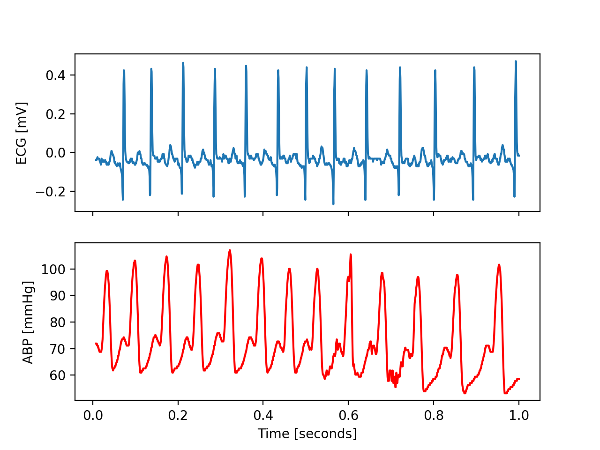

Feature Extraction
cmda.feature_extraction.Features is a tool for extracting multiple features at the same time from a numeric signal x.
User can select from a wide variety of built-in features, as well as adding user-defined features. This functionality makes it possible to tailor the features based on the application.
In the following sections, we can see examples of time domain, frequency domain and user defined feature extraction.
The Data
We start by using a sample data contains an ECG signal and ABP (Arterial Blood Pressure) signal with a length of 10 seconds and 125 Hz sampling rate.
The toy data can be accessed from cmda.data.ecg_abp_sample.
import numpy as np
import matplotlib.pyplot as plt
from cmda.data import ecg_apb_sample
data = ecg_apb_sample()
ecg = data["ECG"]
abp = data["ABP"]
fs = 125
t = np.linspace(1, 1 / fs, len(ecg))
print(len(ecg), len(t))
fig, (ax1, ax2) = plt.subplots(2, sharex=True)
ax1.plot(t, ecg)
ax1.set_ylabel("ECG [mV]")
ax2.plot(t, abp, c="red")
ax2.set_ylabel("ABP [mmHg]")
ax2.set_xlabel("Time [seconds]")
plt.show()

Time Domain Feature Extraction
In this example, we extract some built-in time-domain features of the ABP signal. To start, we must call the cmda.feature_extraction.Features object and add the desired features, using the add function. After adding the features, we apply the transform function to the signal and get the features.
from cmda.feature_extraction import Features
from cmda.data import ecg_apb_sample
data = ecg_apb_sample()
x = data["ABP"]
feature = Features()
# add built-in time-domain features
feature.add.mean()
feature.add.max()
feature.add.min()
feature.add.median()
feature.add.skewness()
feature.add.kurtosis()
feature.add.std()
feature.add.p2p()
feature.add.zcr(center=True)
res = feature.transform(x=x, fs=125)
print(res)
transform return the extracted features as a dictionary:
{'mean': 72.385, 'max': 107.03125, 'min': 53.125, 'median': 69.53125, 'skewness': 0.9154627781784881, 'kurtosis': -0.15299373030467667, 'std': 13.268216310510619, 'p2p': 53.90625, 'zcr': 42}
Frequency Domain Feature Extraction
In this example, we extract some built-in frequency-domain features of the ECG signal. Like the previous example, we call the cmda.feature_extraction.Features object, and add the desired features, using the add function. After adding the features, we apply the transform function to the signal and get the features.
from cmda.feature_extraction import Features
from cmda.data import ecg_apb_sample
data = ecg_apb_sample()
x = data["ECG"]
feature = Features()
# add frequency-domain built-in features
feature.add.mnf(spectrum="ps")
feature.add.mdf(spectrum="ps")
feature.add.stdf(spectrum="ps")
feature.add.psr(spectrum="welch", int_limit_ratio=0.01)
feature.add.peaks(spectrum="welch", n_peaks=1, height=True, width=True)
feature.add.band_sum(spectrum="ps", low=1, high=7)
feature.add.band_mnf(spectrum="ps", low=1, high=7)
res = feature.transform(x=x, fs=125)
print(res)
transform returns the extracted features as a dictionary:
{'mnf': 9.857968968908676, 'mdf': 9.0, 'stdf': 6.657686374206612, 'psr_0.01': 0.1086823980353686, 'peak_freq_1': 3.90625, 'peak_height_1': 0.0009058970155242925, 'peak_width_1': 4.386465062242469, 'band_sum': 0.3921784430303598, 'band_mnf': 4.277888519896743}